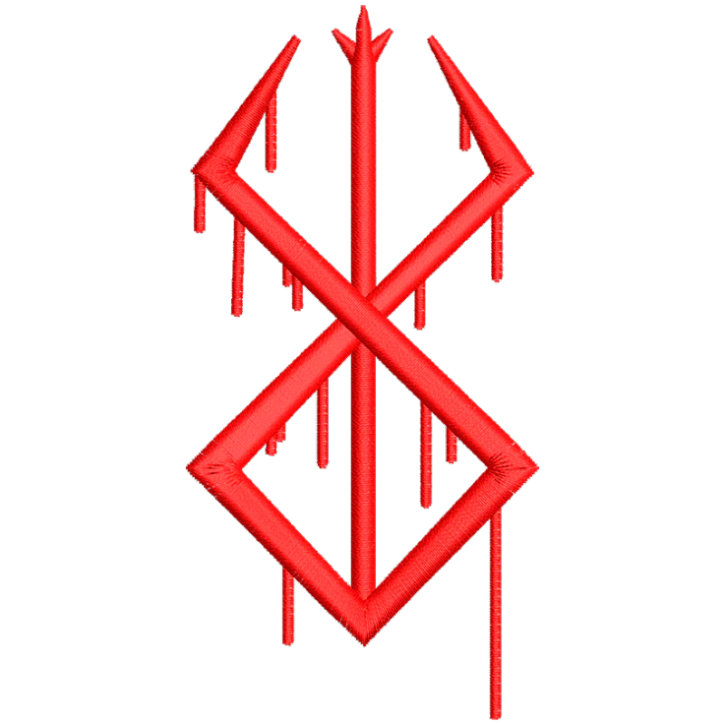
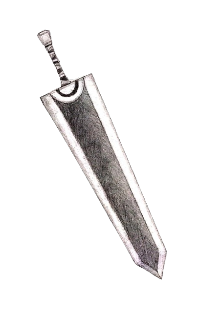

B E R S E R K
Conheça a história do "Espadachin negro" Guts... clique no botão a baixo e assista essa obra.
Assista já
Conheça a história do "Espadachin negro" Guts... clique no botão a baixo e assista essa obra.
Assista já